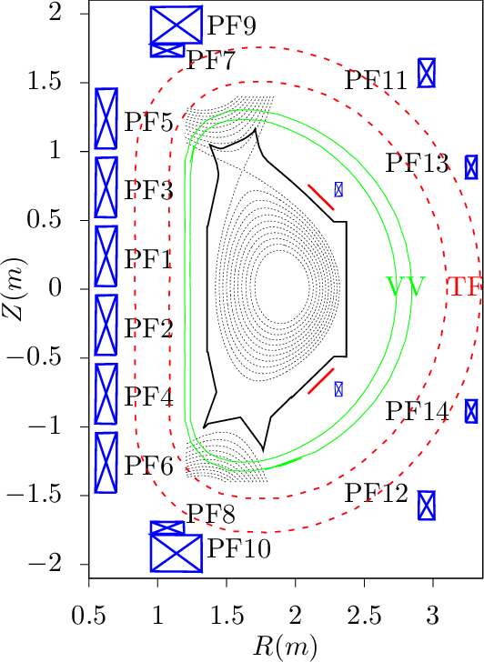

EAST has 12 independently powered superconducting poloidal field (PF) coils, as is shown in Fig. 33.

Using Ampere’s circuital law
|
| (486) |
along the toroidal direction and assuming perfect toroidal symmetry, we obtain
 | (487) |
which gives
|
| (488) |
Neglecting the poloidal current contributed by the plasma, the poloidal current is determined solely by the current in the TF coils. The EAST tokamak has 16 groups of TF coils with 130turns/coil (I got to know the number of turns from Sun Youwen). Denote the current in a single turn by Is, then Eq. (488) is written
 | (489) |
Using this formula, the strength of the toroidal magnetic field at R = 1.8m for Is = 104A is calculated to be Bϕ = 2.31T. This field (Is = 104A, and thus Bt = 2.31T at R = 1.8m) was one of the two scenarios often used in EAST experiments (another scenario is Is = 8 × 103A). (The limit of the current in a single turn of the TF coils is 14.5kA (from B. J. Xiao’s paper [29]).
Note that the exact equilibrium toroidal magnetic field Bϕ is given by Bϕ = g(Ψ)∕R. Compare this with Eq. (488), we know that the approximation made to obtain Eq. (489) is equivalent to g(Ψ) ≈ μ0ITF∕2π, i.e. assuming g is a constant function of Ψ. The poloidal plasma current density jpol is related to g by jpol = g′(Ψ)Bp∕μ0. The constant g corresponds to zero plasma poloidal current, which is consistent to the assumption used to obtain Eq. (489).
Let us estimate the safety factor value near the plasma edge using the total plasma current and the current in a single turn of TF coils Is. For divertor magnetic configuration, the plasma edge is at the saperatrix, where q →∞. To get a characteristic safety factor value that is finite, one often chooses the edge to be the magnetic surface that encloses 95% of the poloidal magnetic flux. Denote this surface by S95 and the value of q at this surface by q95, which is given by
 | (490) |
where a is the minor radius of the surface S95, and Raxis the major radius of the magnetic axis, Bϕ,axis is the the magnitude of toroidal magnetic field at the magnetic axis, and Bp is the average poloidal magnetic field on the surface, Bp ≈ μ0Ip∕(2πa). Using Eq. (489), Eq. (490) is written as
 | (491) |
For EAST, tipically Raxis = 1.85m and a = 0.45m. Using this, we obtain
|
| (492) |
The so-called resonant magnetic perturbation (RMP) coils are 3D coils that are used to suppress or mitigate edge localized modes. The shape and location of RMP coils of EAST tokamak are plotted in Fig. 34.